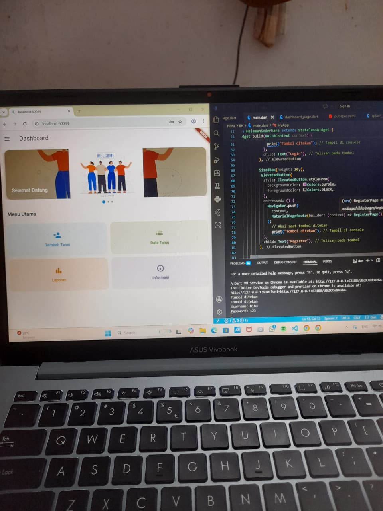

Project ini merupakan latihan sederhana dalam belajar Flutter untuk membuat tampilan aplikasi mobile. Pada project ini saya mencoba membuat halaman login dan register menggunakan Flutter dengan desain sederhana dan mudah dipahami.
Konsep aplikasi yang dibuat berfokus pada tampilan mobile sederhana dan nyaman digunakan:
Project dibuat sebagai latihan awal menggunakan Flutter dan Visual Studio Code dengan fokus pada:
Foto-foto dari project latihan ini menghasilkan: